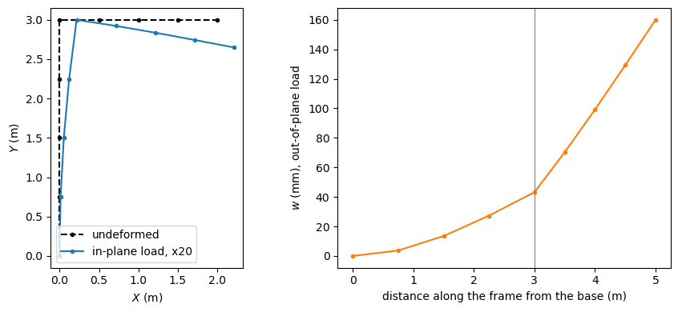
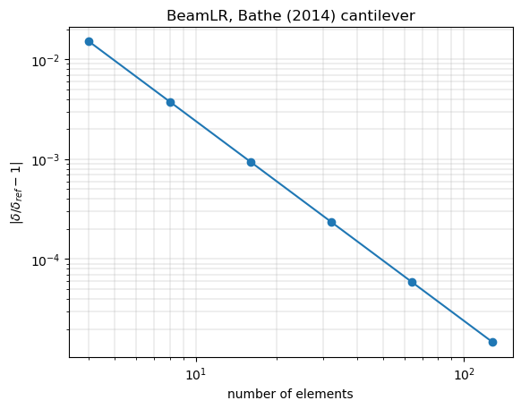

Linear static analysis of beams and frames#
This example solves two linear static problems with the beam elements of pyfe3d and compares the results with closed-form solutions:
an L-shaped frame of
BeamCelements, clamped at the base of the column and loaded at the free end of the beam, in its plane and out of its plane;the cantilever with shear deformation of Bathe (2014, Sec. 1.2), with
BeamCandBeamLR.
The theory of the elements is in Beam theory and the beam elements, the orientation of the element axes in Conventions and the steps of a linear static analysis in Linear static analyses. The full references are at the end of the notebook.
[1]:
%matplotlib inline
import numpy as np
import matplotlib.pyplot as plt
from scipy.sparse import coo_matrix
from pyfe3d import (BeamC, BeamCData, BeamCProbe, BeamLR, BeamLRData,
BeamLRProbe, DOF, DOUBLE, INT)
from pyfe3d.beamprop import BeamProp
from pyfe3d.solver import solve
1. L-shaped frame#
Geometry, material and section#
The column, of height \(H = 3\) m, goes from the origin along the global \(Y\) axis; the beam, of length \(L = 2\) m, goes from the top of the column along \(X\). Both members have a rectangular section of width \(b = 0.05\) m along the element \(z\) axis and height \(h = 0.10\) m along the element \(y\) axis, \(E = 200\) GPa, \(G = E/(2(1 + \nu))\) with \(\nu = 0.3\), and the torsion constant \(J = 1.5
\times 10^{-6}\) m\(^4\). No shear correction factor is applied, so that \(A\) is also the shear area. The properties of the section are given to BeamProp:
[2]:
H = 3.
L = 2.
P = 1.e3 # N, magnitude of the tip loads
E = 200.e9
nu = 0.3
b = 0.05 # width along the element z axis
h = 0.10 # height along the element y axis
prop = BeamProp()
prop.E = E
prop.G = E/(2*(1 + nu))
prop.A = b*h
prop.Izz = b*h**3/12
prop.Iyy = h*b**3/12
prop.J = 1.5e-6
print('A = %.4e m2, Izz = %.4e m4, Iyy = %.4e m4, J = %.4e m4'
% (prop.A, prop.Izz, prop.Iyy, prop.J))
A = 5.0000e-03 m2, Izz = 4.1667e-06 m4, Iyy = 1.0417e-06 m4, J = 1.5000e-06 m4
Mesh and stiffness matrix#
Each element receives the positions c1, c2 of its nodes in the global vectors, init_k_KC0, its position in the sparse arrays of \(\boldsymbol{K}_{C0}\), and the vector vxy of update_rotation_matrix, which, with the element axis, defines the element \(x\)-\(y\) plane. The vector is chosen such that the element \(z\) axis of both members is the global \(Z\) axis: the bending in the plane of the frame is then governed by Izz and the bending out of its
plane by Iyy. The function below builds the frame with num_elements elements per member and returns the elements and the global \(\boldsymbol{K}_{C0}\), assembled with scipy.sparse.coo_matrix:
[3]:
def frame(num_elements):
s = np.linspace(0, 1, num_elements + 1)
column = np.column_stack((0*s, H*s, 0*s))
beam = np.column_stack((L*s[1:], H + 0*s[1:], 0*s[1:]))
ncoords = np.vstack((column, beam))
x = ncoords.flatten()
num_nodes = ncoords.shape[0]
N = DOF*num_nodes
data = BeamCData()
probe = BeamCProbe()
num_beams = num_nodes - 1
KC0r = np.zeros(data.KC0_SPARSE_SIZE*num_beams, dtype=INT)
KC0c = np.zeros(data.KC0_SPARSE_SIZE*num_beams, dtype=INT)
KC0v = np.zeros(data.KC0_SPARSE_SIZE*num_beams, dtype=DOUBLE)
elements = []
for pos1 in range(num_beams):
pos2 = pos1 + 1
elem = BeamC(probe)
elem.n1 = pos1 + 1
elem.n2 = pos2 + 1
elem.c1 = DOF*pos1
elem.c2 = DOF*pos2
elem.init_k_KC0 = pos1*data.KC0_SPARSE_SIZE
if pos1 < num_elements:
elem.update_rotation_matrix(-1., 0., 0., x) # column
else:
elem.update_rotation_matrix(0., 1., 0., x) # beam
elem.update_probe_xe(x)
elem.update_KC0(KC0r, KC0c, KC0v, prop)
elements.append(elem)
KC0 = coo_matrix((KC0v, (KC0r, KC0c)), shape=(N, N)).tocsc()
return ncoords, elements, KC0
The reference solution#
The displacements of the free end follow from the principle of virtual work (the unit-load method), with the bending and shear deformations of the Timoshenko beam, the axial deformation and the Saint-Venant torsion. For the in-plane load \(F_Y = -P\), the beam bends and shears, the column bends under the constant moment \(P L\) and shortens:
For the out-of-plane load \(F_Z = P\), both members bend about their weak axis and shear, and the column is twisted by the torque \(P L\), which rotates the beam as a rigid arm of length \(L\):
The consistent shape functions of BeamC solve the equilibrium equations of the Timoshenko beam for a prismatic element without distributed loads (constant axial force, shear forces and twisting moment, linear bending moments), so these nodal displacements are expected to be exact with any number of elements per member, to round-off:
[4]:
G, A = prop.G, prop.A
Izz, Iyy, J = prop.Izz, prop.Iyy, prop.J
v_ref = -P*(L**3/(3*E*Izz) + L/(G*A) + L**2*H/(E*Izz) + H/(E*A))
u_ref = P*L*H**2/(2*E*Izz)
rz_ref = -P*(L*H/(E*Izz) + L**2/(2*E*Izz))
w_ref = P*((L**3 + H**3)/(3*E*Iyy) + (L + H)/(G*A) + L**2*H/(G*J))
print('v_ref = %.6e m, u_ref = %.6e m, rz_ref = %.6e rad, w_ref = %.6e m'
% (v_ref, u_ref, rz_ref, w_ref))
v_ref = -1.760820e-02 m, u_ref = 1.080000e-02 m, rz_ref = -9.600000e-03 rad, w_ref = 1.600130e-01 m
Boundary conditions and solution#
The six dofs of the first node, the base of the column, are constrained: the Boolean array bk marks the known dofs and bu the unknown ones, and the system \(\boldsymbol{K}_{C0_{uu}} \boldsymbol{u}_u = \boldsymbol{f}_u\) is solved with pyfe3d.solver.solve. The last node is the free end, whose dofs start at N - DOF. Both load cases are solved with 1 and 4 elements per member:
[5]:
results = {}
for num_elements in [1, 4]:
ncoords, elements, KC0 = frame(num_elements)
N = KC0.shape[0]
bk = np.zeros(N, dtype=bool)
bk[:DOF] = True
bu = ~bk
KC0uu = KC0[bu, :][:, bu]
tip = N - DOF
# in-plane load at the free end
f_in = np.zeros(N)
f_in[tip + 1] = -P
u_in = np.zeros(N)
u_in[bu] = solve(KC0uu, f_in[bu])
# out-of-plane load at the free end
f_out = np.zeros(N)
f_out[tip + 2] = P
u_out = np.zeros(N)
u_out[bu] = solve(KC0uu, f_out[bu])
results[num_elements] = dict(ncoords=ncoords, elements=elements,
u_in=u_in, u_out=u_out, bu=bu, f_in=f_in,
v=u_in[tip + 1], u=u_in[tip + 0],
rz=u_in[tip + 5], w=u_out[tip + 2])
Results against the reference#
The displacements of the free end agree with the closed form to round-off with one element per member, as expected:
[6]:
print('%-9s %-3s %16s %16s %10s' % ('elements', 'dof', 'pyfe3d', 'reference',
'rel. diff.'))
for num_elements, res in results.items():
for name, ref in [('v', v_ref), ('u', u_ref), ('rz', rz_ref), ('w', w_ref)]:
print('%-9d %-3s %16.9e %16.9e %10.1e'
% (num_elements, name, res[name], ref, res[name]/ref - 1))
elements dof pyfe3d reference rel. diff.
1 v -1.760820000e-02 -1.760820000e-02 -1.2e-13
1 u 1.080000000e-02 1.080000000e-02 -1.9e-13
1 rz -9.600000000e-03 -9.600000000e-03 -1.1e-13
1 w 1.600130000e-01 1.600130000e-01 2.0e-15
4 v -1.760820000e-02 -1.760820000e-02 -1.6e-13
4 u 1.080000000e-02 1.080000000e-02 -2.4e-13
4 rz -9.600000000e-03 -9.600000000e-03 -1.5e-13
4 w 1.600130000e-01 1.600130000e-01 -1.1e-12
Internal forces and reactions#
update_fint gives the internal force vector \(\boldsymbol{F}_{int} =
\boldsymbol{K}_{C0} \boldsymbol{u}\), element by element, from the displacements given to the probe with update_probe_ue. At the free dofs it equals the external load; at the clamped base it is the support reaction, which balances the load and its moment \(P L\) about \(Z\), i.e. \((F_X, F_Y, F_Z,
M_X, M_Y, M_Z) = (0, P, 0, 0, 0, P L)\) for the in-plane load case:
[7]:
res = results[4]
fint = np.zeros(DOF*res['ncoords'].shape[0])
for elem in res['elements']:
elem.update_probe_ue(res['u_in'])
elem.update_fint(fint, prop)
reaction_ref = np.array([0, P, 0, 0, 0, P*L])
np.set_printoptions(precision=6, suppress=True)
print('reaction at the base ', fint[:DOF])
print('expected ', reaction_ref)
print('max |fint - fext| at the free dofs = %.2e N'
% np.abs(fint[res['bu']] - res['f_in'][res['bu']]).max())
reaction at the base [ 0. 1000. 0. 0. 0. 2000.]
expected [ 0. 1000. 0. 0. 0. 2000.]
max |fint - fext| at the free dofs = 1.82e-10 N
Deformed shapes#
The nodal displacements of the mesh with 4 elements per member, amplified for the plot (the lines join the nodes, the element interpolation between them is not drawn):
[8]:
res = results[4]
X, Y, Z = res['ncoords'].T
fig, axs = plt.subplots(1, 2, figsize=(9, 4))
scale = 20
uin = res['u_in']
axs[0].plot(X, Y, 'k--o', ms=3, label='undeformed')
axs[0].plot(X + scale*uin[0::DOF], Y + scale*uin[1::DOF], 'C0-o', ms=3,
label='in-plane load, x%d' % scale)
axs[0].set_xlabel('$X$ (m)')
axs[0].set_ylabel('$Y$ (m)')
axs[0].set_aspect('equal')
axs[0].legend(loc='lower left')
uout = res['u_out']
s = np.r_[Y[:5], H + X[5:]]
axs[1].plot(s, uout[2::DOF]*1e3, 'C1-o', ms=3)
axs[1].axvline(H, color='gray', lw=0.8)
axs[1].set_xlabel('distance along the frame from the base (m)')
axs[1].set_ylabel('$w$ (mm), out-of-plane load')
plt.tight_layout()
plt.show()

2. Cantilever with shear deformation#
The tip deflection of a cantilever under a tip force \(W\), with the shear deformation, is Eq. (1.2) of Bathe (2014, Sec. 1.2, p. 5),
for the beam of his Fig. 1.2(b): \(L = 28\) cm (the length plus \(r_N\) of the figure), height 6 cm, thickness 0.4 cm, \(E = 2 \times 10^7\) N/cm\(^2\), \(\nu =
0.3\), \(\kappa = 5/6\) and \(W = 1000\) N, for which Bathe gives 0.053 cm. The shear correction factor is included in \(G\). The section is square in stiffness, Izz = Iyy, so the deflections in both bending planes are equal:
[9]:
Lc = 28. # cm
W = 1000. # N
Ec = 2.e7 # N/cm2
hc = 6. # cm
tc = 0.4 # cm
propc = BeamProp()
propc.A = hc*tc
propc.E = Ec
propc.G = 5/6*Ec/(2*(1 + 0.3))
propc.Izz = propc.Iyy = tc*hc**3/12
propc.J = propc.Izz + propc.Iyy
delta_ref = W*Lc**3/(3*Ec*propc.Izz) + W*Lc/(propc.A*propc.G)
print('Eq. (1.2) of Bathe (2014): delta = %.7f cm' % delta_ref)
Eq. (1.2) of Bathe (2014): delta = 0.0526348 cm
The cantilever is meshed along \(x\) with BeamC or BeamLR elements, clamped at \(x = 0\), and the tip deflections along \(y\) and \(z\) are computed for unit tip forces:
[10]:
ELEMENTS = {
'BeamC': (BeamC, BeamCData, BeamCProbe),
'BeamLR': (BeamLR, BeamLRData, BeamLRProbe),
}
def cantilever_tip(name, num_elements):
cls, datacls, probecls = ELEMENTS[name]
data = datacls()
probe = probecls()
xs = np.linspace(0, Lc, num_elements + 1)
x = np.vstack((xs, 0*xs, 0*xs)).T.flatten()
N = DOF*(num_elements + 1)
KC0r = np.zeros(data.KC0_SPARSE_SIZE*num_elements, dtype=INT)
KC0c = np.zeros(data.KC0_SPARSE_SIZE*num_elements, dtype=INT)
KC0v = np.zeros(data.KC0_SPARSE_SIZE*num_elements, dtype=DOUBLE)
for i in range(num_elements):
beam = cls(probe)
beam.init_k_KC0 = i*data.KC0_SPARSE_SIZE
beam.n1, beam.n2 = i + 1, i + 2
beam.c1, beam.c2 = DOF*i, DOF*(i + 1)
beam.update_rotation_matrix(0., 1., 0., x)
beam.update_probe_xe(x)
beam.update_KC0(KC0r, KC0c, KC0v, propc)
KC0 = coo_matrix((KC0v, (KC0r, KC0c)), shape=(N, N)).tocsc()
bu = np.ones(N, dtype=bool)
bu[:DOF] = False
tip = []
for direction in [1, 2]:
f = np.zeros(N)
f[N - DOF + direction] = 1.
u = np.zeros(N)
u[bu] = solve(KC0[bu, :][:, bu], f[bu])
tip.append(u[N - DOF + direction])
return np.array(tip)
BeamC is exact with one element, for the reason given for the frame. BeamLR, with its linear interpolation and reduced integration, converges with the square of the element length:
[11]:
print('%-7s %8s %12s %12s %12s %11s %11s' % ('element', 'elements',
'delta_y', 'delta_z', 'Eq. (1.2)', 'rel. diff.', 'vs 0.053'))
for name, num_elements in [('BeamC', 1), ('BeamC', 3), ('BeamLR', 10),
('BeamLR', 100)]:
dy, dz = W*cantilever_tip(name, num_elements)
print('%-7s %8d %12.7f %12.7f %12.7f %11.2e %11.2e'
% (name, num_elements, dy, dz, delta_ref, dy/delta_ref - 1,
dy/0.053 - 1))
element elements delta_y delta_z Eq. (1.2) rel. diff. vs 0.053
BeamC 1 0.0526348 0.0526348 0.0526348 -2.22e-16 -6.89e-03
BeamC 3 0.0526348 0.0526348 0.0526348 -1.55e-15 -6.89e-03
BeamLR 10 0.0525078 0.0525078 0.0526348 -2.41e-03 -9.29e-03
BeamLR 100 0.0526335 0.0526335 0.0526348 -2.41e-05 -6.91e-03
The last column compares with the published value, 0.053 cm, given with two significant digits. The convergence of BeamLR:
[12]:
nes = np.array([4, 8, 16, 32, 64, 128])
errors = np.array([abs(W*cantilever_tip('BeamLR', ne)[0]/delta_ref - 1)
for ne in nes])
for ne, err in zip(nes, errors):
print('BeamLR %4d elements, relative difference %.3e' % (ne, err))
rate = np.polyfit(np.log(1/nes), np.log(errors), 1)[0]
print('fitted order of convergence: %.2f' % rate)
plt.loglog(nes, errors, 'o-')
plt.xlabel('number of elements')
plt.ylabel(r'$|\delta/\delta_{ref} - 1|$')
plt.title('BeamLR, Bathe (2014) cantilever')
plt.grid(True, which='both', lw=0.3)
plt.show()
BeamLR 4 elements, relative difference 1.508e-02
BeamLR 8 elements, relative difference 3.771e-03
BeamLR 16 elements, relative difference 9.428e-04
BeamLR 32 elements, relative difference 2.357e-04
BeamLR 64 elements, relative difference 5.892e-05
BeamLR 128 elements, relative difference 1.473e-05
fitted order of convergence: 2.00

References#
Bathe, K. J., Finite Element Procedures, 2nd ed., K. J. Bathe, Watertown, MA, 2014, ISBN 978-0-9790049-5-7.